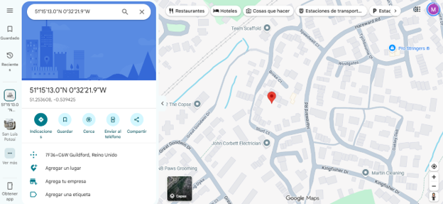

Actividad 15
La fotografía como testigo: extracción de metadatos GPS para geolocalización
Análisis de metadatos de archivos digitales mediante ExifTool, identificando información relacionada con su creación, modificación, autoría y ubicación geográfica. La actividad comprende el análisis de un documento de INTERPOL y una fotografía capturada con un dispositivo móvil, así como la eliminación de metadatos para comprender su importancia en la seguridad de la información.
Objetivo
Identificar y analizar los metadatos almacenados
en archivos digitales mediante el uso de la
herramienta ExifTool, con el propósito de reconocer
la información que puede obtenerse de un archivo
sin necesidad de acceder directamente a su contenido.
A través del análisis de un documento de Microsoft Word
y una fotografía en formato JPEG, se buscó recuperar
información relacionada con autores, fechas,
características técnicas y coordenadas GPS.
Asimismo, se realizó un procedimiento de eliminación
de metadatos para comprender la importancia de
proteger la información que puede permanecer
almacenada dentro de los archivos compartidos.
Desarrollo
La actividad se desarrolló utilizando
ExifTool, una herramienta que permite
consultar, modificar y eliminar metadatos
de diferentes formatos de archivo.
Desde la terminal de Windows PowerShell,
se accedió al directorio que contenía los
archivos proporcionados para su análisis.
Posteriormente, se ejecutaron los comandos
correspondientes para obtener la información
almacenada en cada uno.
Parte I. Análisis de metadatos de un documento
En la primera parte se analizó el archivo
WOA database application form.docx,
correspondiente a un documento de INTERPOL.
Una vez identificado el directorio donde
se encontraba almacenado el archivo,
se ejecutó el siguiente comando:
..\exiftool.exe "WOA database application form.docx"
La herramienta devolvió los metadatos del documento,
permitiendo identificar información relacionada
con su clasificación, plantilla utilizada,
tiempo de edición, compañía propietaria,
autoría y fecha de creación.
Entre los datos recuperados se identificó
que el documento estaba clasificado como
Unclassified y que la compañía
propietaria registrada era
OIPC - INTERPOL.
También se identificó a
Carolyn Lejeune como creadora
y última persona que modificó el documento.
Información recuperada del documento
Los principales metadatos identificados
fueron los siguientes:
Clasificación: Unclassified.
Plantilla utilizada:
G03 Basic Doc SP.dotx.
Tiempo total de edición:
45 minutos.
Compañía propietaria:
OIPC - INTERPOL.
Última modificación realizada por:
Carolyn Lejeune.
Fecha de creación:
03 de mayo de 2019.
Creadora del documento:
Carolyn Lejeune.
Estos resultados permitieron comprobar
que los metadatos de un documento pueden
proporcionar información sobre su origen,
historial de edición y personas involucradas
en su elaboración.
Parte II. Análisis de metadatos de una fotografía
En la segunda parte se analizó el archivo
XiaomiMiA2Lite.jpg, una fotografía
que contenía metadatos relacionados con
el dispositivo utilizado para capturarla
y su ubicación geográfica.
Desde PowerShell se ejecutó el comando:
..\exiftool.exe XiaomiMiA2Lite.jpg
ExifTool mostró información técnica de la
fotografía, incluyendo el modelo de la cámara,
configuración de captura, fecha de creación
y datos de geolocalización GPS.
Entre los principales resultados obtenidos
se identificaron los siguientes:
Dispositivo:
Xiaomi Mi A2 Lite.
ISO:
100.
Longitud focal:
3.8 mm.
Flash:
No utilizado.
Fecha de captura:
28 de mayo de 2020.
Identificación de coordenadas GPS
Uno de los aspectos principales de la actividad
consistió en identificar los datos de ubicación
GPS almacenados en la fotografía.
Durante el análisis se encontraron los
siguientes valores:
GPS Latitude:
51° 15' 12.99" N
GPS Longitude:
0° 32' 21.93" W
GPS Position:
51° 15' 12.99" N,
0° 32' 21.93" W
GPS Altitude:
96.7 metros por debajo del nivel del mar,
según el valor registrado en los metadatos.
Las coordenadas identificadas se introdujeron
en Google Maps para localizar
geográficamente el punto registrado.
El resultado permitió ubicar la fotografía
en una zona de Guildford, Surrey,
Reino Unido.

La consulta en Google Maps permitió visualizar
el punto correspondiente a las coordenadas
recuperadas mediante ExifTool.
Este procedimiento demuestra cómo los
metadatos de una fotografía pueden revelar
información sobre la ubicación registrada
al momento de su captura, incluso cuando
dicha información no es visible directamente
en la imagen.
Eliminación de metadatos de la fotografía
Finalmente, se realizó un procedimiento
para eliminar los metadatos de la fotografía
analizada.
Para ello, se utilizó el parámetro
-all= de ExifTool mediante
el siguiente comando:
..\exiftool.exe -all= XiaomiMiA2Lite.jpg
Este comando permite eliminar los metadatos
editables compatibles con la herramienta,
reduciendo la información adicional
almacenada en el archivo.
Posteriormente, se ejecutó nuevamente
el comando de consulta:
..\exiftool.exe XiaomiMiA2Lite.jpg
Al revisar la nueva salida de ExifTool,
se observó que los datos relacionados
con el dispositivo, la configuración
de captura y la ubicación GPS
ya no aparecían en los resultados.
La herramienta continuó mostrando
información básica sobre el archivo,
como su formato, tamaño y características
generales de codificación.
Con ello se comprobó la eliminación
de los metadatos analizados y se
identificó una medida útil para
reducir la exposición de información
al compartir archivos digitales.
Resultados
Mediante el uso de ExifTool fue posible
recuperar y analizar los metadatos de
dos archivos digitales de diferente formato:
un documento de Microsoft Word y una
fotografía JPEG.
En el análisis del documento de INTERPOL
se identificaron datos relacionados
con su clasificación, plantilla,
tiempo de edición, compañía propietaria,
fecha de creación y autoría.
Por otra parte, el análisis de la fotografía
permitió identificar el dispositivo
utilizado para su captura, características
técnicas de la cámara y coordenadas GPS.
A partir de estas coordenadas fue posible
localizar en Google Maps una ubicación
correspondiente a Guildford, Surrey,
Reino Unido.
Finalmente, se ejecutó el procedimiento
de eliminación de metadatos y se verificó
que la información previamente identificada,
incluyendo las coordenadas GPS,
dejó de aparecer en la salida de ExifTool.
Los resultados demostraron que los
metadatos pueden proporcionar información
relevante sobre el origen, características
e historial de los archivos digitales.
Conclusión
La actividad permitió comprender la
importancia de los metadatos dentro
del análisis de archivos digitales,
así como la cantidad de información
que puede obtenerse mediante herramientas
especializadas como ExifTool.
A través del análisis de un documento
de INTERPOL fue posible identificar
información relacionada con su creación,
modificación y autoría, mientras que
el análisis de una fotografía permitió
recuperar características técnicas
del dispositivo y datos de geolocalización.
La identificación de coordenadas GPS
resultó especialmente relevante,
ya que permitió observar cómo una
fotografía puede contener información
sobre una ubicación geográfica
sin que esta sea visible en su contenido.
Asimismo, el procedimiento de eliminación
de metadatos permitió reconocer una
medida para reducir la exposición
de información al compartir archivos.
En el contexto de la seguridad informática,
esta práctica reforzó la importancia
del análisis de metadatos en procesos
de investigación digital, así como
la necesidad de considerar los riesgos
de privacidad asociados con la
información almacenada en los archivos.